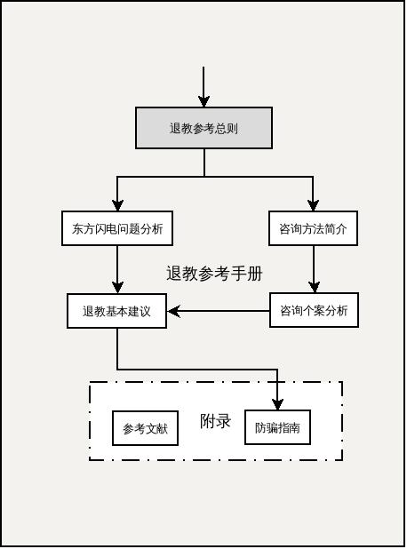
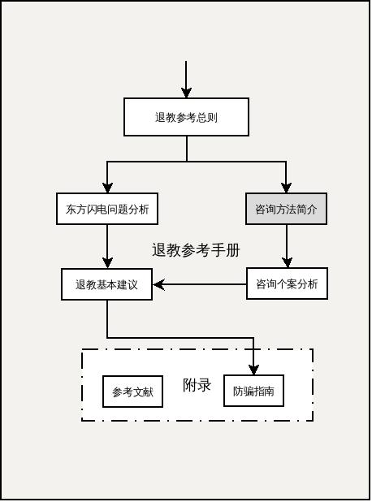
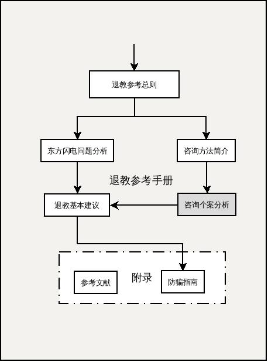
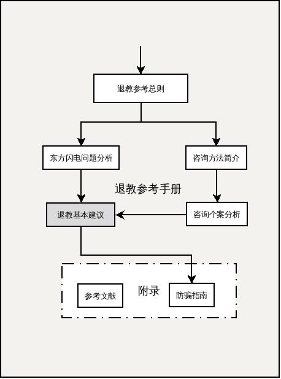
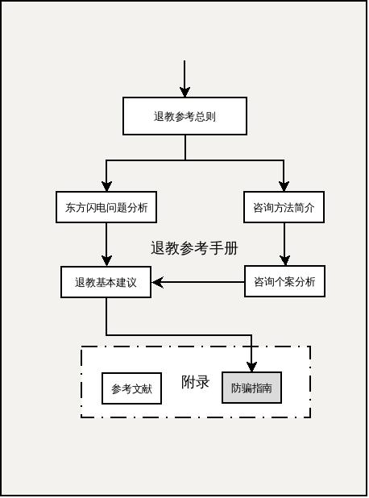

退教参考手册(tjsc)¶
本文档提供东方闪电退教的详细说明， 建议你在阅读本文档之前，先阅读东方闪电退教手册使用指南来快速了解东方闪电退教参考手册。
本文档以退教参考手册（2011年版）为基础，进行进一步的完善和修改。以下为具体修改的原则：
- 对于11版中的转载内容进行加工，以引用形式重新编写，由于11版以资料册为目的，14版则更加倾向于原创和谈谈笔者本人的观点和看法。
- 增加案例分析内容，将较详细的咨询案例提供给广大家属参考。
- 对于原理性内容将做详细的讨论，并对当前主要的思想流派做一个整理，说说和退教咨询之间的关系。
- 对于当前网络上流行的各种反邪观点和信息材料做一个梳理，帮助受害者家属看清真伪，明白其中的利弊。
退教参考总则¶
Note
我相信在群星当中有一颗星星，引领我的生命，穿越不可知的黑暗。—— 泰戈尔
编制目的¶
退教参考手册(TJSC) 的目的是，助人自救，在有限的条件下帮助受害者家属理清思路，看清问题，对受害者采取合适的干预手法，以致于尽早的摆脱邪教问题带给家庭的负面影响，恢复到正常的生活秩序中去。同时也给不了解东方闪电问题的朋友一些有益的提醒，以帮助未来预防此类问题打下一个良好的基础。如果由此能够唤醒一部分民众走向自我觉醒，那么就是更好的一个收获了。
重点、难点与疑点¶
东方闪电退教的重点¶
本人认为，反邪的重点在于 防骗 ，退教的重点前期和中期在于 危机干预 和 心理疏导 ，后期在于读书提高素质,并且辅以养成良好的生活习惯，保持积极乐观的生活态度，使受害者及其家庭恢复到正常的生活轨道中来，所以退教参考手册也将把重心放在这个方向。
关于东方闪电还有一个问题重点就是防骗，如何提高大多人的防骗意识。
对于这些，本手册在反邪防骗指南中进行了一些必要的收集和整理，都添加在附录中，详见：
- 防骗指南
东方闪电退教的难点试析¶
本人尝试以自己的学习生活中的经验,帮助一些朋友来摆脱被东方闪电设局所破坏的尴尬局面.因为自己本身也有一个文化程度,理解能力都不高的母亲,深切知道其中的难办之处.以下尝试整理出来,供大家参考:
- 受害者及家属常识缺乏，理性判断能力不足，难以自我识别骗局。
救助者初期往往会因为对于问题定义错误，容易将其简单归类为受害者本人犯了某些错误，或者受到网络上信息的误导，并不利于找到问题的解决核心，以致于问题难以有效解决，正确的思路对于有效解决实际问题至关重要。因为从受害者的角度看，他们基本上不会认为自己是在做错事，恰恰相反，他们会把自己做的事情当作非常伟大而且光荣的好事。习惯以情绪做导向，然后树立一个先验的目标或价值观，最后再给其找理由证明正确性。这样做必然容易得到偏狭的结果。或者说，以情绪为导向的人，其目标并不是找到正确的结果，而是为了给自己的情绪发泄找一个合意的突破口。 没有学习到如何运用理性的方法来看待问题，分析问题，解决问题。是此类问题的症结所在。其实这正是我国特殊的国情所决定的，多年封闭填鸭教育的结果，因为民智不开，对于社会的变革适应能力低下，所产生的文革后遗症问题。 特征：容易上当受骗，理性分析能力缺乏。
解决问题：注意不要正面进行冲突，以免问题僵化，常用日常疏导性对话，应该更有益处。有选择的给其播放一些正面信息，帮助其恢复基本理性的判断能力。
注意事项：鉴于各个地区政府的实际办事能力，对于此类问题，主要还是要靠患者家属有足够的觉悟才行。
- 利用亲友相传，受害者容易说服，受害人及其家属心理防御低的特点，趁虚而入，暗度陈仓。
东方闪电设计的骗局处在阴暗处，让人有难做判断之感，不利于掌握问题的特质，但是当代所有的诈骗集团都是用了类似的套路，我们可以通过类似的已经揭发的骗局中来查看东方闪电类的端倪。例如：传销诈骗、已经被打击的邪教组织。我这里要重点指出的是，邪教的传播形式，往往采用亲友相传的方式方法，往往让人防不胜防。一旦入局，根据其本人的文化素质和性格特征，能够被成功转化，使其能够正确认识到自己上当的几率就比较低，往往会比较难以说服。在这里一方面要了解洗脑的一般方法，还要理解一些基础的心理学常识，这方面往往是当前学校教育的盲区，需要通过自我学习的方式进以补充。
特征：亲友相传，容易说服，心理防御降低。一旦心理防线突破，习惯养成，难以更改。
解决方法：针对问题特点，有必要制作一些常识手册，便于分发给家庭已经有此类问题的朋友加以学习和预防。提高面对问题分析与解决的能力。
注意事项：警惕多年没有走动的亲戚朋友，如果家属属于社会闲散无业状态，要注意她结交的朋友中是否有不良的人员，以免被误导入局。
- 邪教问题往往掩盖了很多更深层的家庭矛盾
受害人家庭往往自身存在某些非常现实的生活问题困扰，家庭气氛紧张，受害人身心压力大，有寻求解脱的心理需求。这点要主要依据我国的特殊国情来说，一般东方闪电信徒，多为中老年妇女，这些人生理处在更年期，大多有容易激动、心理有焦虑倾向、容易被暗示等心理特点。根据学者研究发现，在女性生理期间，会改变人的大脑结构（参见女性月經週期對於負向情緒事件自我調控之中樞神經機制）。再加上社会变革带来的大规模结构调整，让其中的文化程度较低的家庭受到比较严重的冲击，失业，下岗，子女就业问题，婚姻危机，社会医疗问题，养老问题等都是这些人之前没有预估到的，所以容易使得焦虑度增加，寻求解脱。给邪教传播创造了有利的环境。诸多因素构成了一个问题，她们如何应对她们正在面临的问题。一个不良的社会结构所导致的问题往往不止这些。
特征：受害人家庭本身也存在诸多问题因素，难以简单归咎受害人。
解决方法：接受问题情况，正面所遇到的诸多挑战，积极寻找解决途径。
- 家属心理重建难
当经历过一系列人生打击之后，人往往会比较消极，生活中还存在很多问题和挑战。怎么办？面对和逃避是两种出路，我不能说哪种更好，但是如果选择面对的朋友一定要注意到正确的方法、清楚的认识是非常重要的。邪教问题只是现实问题的掩盖，对于要解决问题的朋友，不但要正视邪教问题，还要将目光放在其问题的根部，现实存在的问题的解决上。只有这样才能一步步的走出困境。而对于存在逃避心理的朋友而言，心理重建则是又一个难题。
- 社会支持弱
一般人碰到这个问题，就会面临找不到合适的单位来解决这个问题，警察会推脱这是综合治理的问题，需要向上级汇报，然后被搁置，甚至如果在网络上发类似的文章会被删贴，中国的反邪教协会也只是做一些宣传预防性质的表面工作，不涉及解决实质性问题。至于医院在碰到这样的病人，则就会开一些治疗精神分裂的药（利醅酮之类），也没有什么进一步的方法。一般人也会躲得远远的。基本上这个问题就变得比癌症还难以处理了。由于政府治理不利，邪教还是在进一步的蔓延，继续侵害人民的利益。
本手册仍处于不断完善中，希望有能力的同学能加入编写退教参考手册的行列。加入方法：直接和本人联系。如有批评、建议和意见，也随时欢迎反馈，或给 写信 给我。
目前退教工作中存在的一些问题和疑点¶
基本术语¶
本章所处位置¶
咨询方法简介¶
性格分析¶
| 正面/负面 | 序号 | R | Y | B | G |
|---|---|---|---|---|---|
| 正面因素 | 1 | 才思敏捷，善于表达 | 注意结果，目标导向 | 工作生活，有条有理 | 天性友善，善于合作 |
| 2 | 待人真诚，乐于助人 | 锐意进去，积极上进 | 遵守规则，严格守时 | 崇尚祥和，温柔祥和 | |
| 3 | 反映迅速，爆发力强 | 意志坚强，越挫越勇 | 成熟稳定，安全放心 | 关心他人，有同情心 | |
| 4 | 打破沉闷，令人愉悦 | 高瞻远瞩，目光远大 | 审时度势，深思熟虑 | 化解矛盾，避免冲突 | |
| 5 | 热情洋溢，生动活泼 | 有全局观，抓大放小 | 深层交流，默契当先 | 容易相处，轻松自然 | |
| 6 | 幽默生动，充满乐趣 | 居安思危，永不满足 | 低调内敛，甘居幕后 | 讲求平衡，追求和谐 | |
| 7 | 善于激励，有感染力 | 不畏危险，敢于挑战 | 善于分析，发现问题 | 善于聆听，极具耐心 | |
| 8 | 情感外露，表现力强 | 高效快速，控制力强 | 完美主义，一丝不苟 | 不疾不徐，中庸之道 | |
| 9 | 积极开朗，追求快乐 | 高度负责，有责任感 | 关注细节，追求卓越 | 宽容大度，心态平和 | |
| 10 | 别出心裁，有创造力 | 权威在握，不能容错 | 感情细腻，体贴入微 | 面对压力，不易紧张 | |
| 11 | 有错就认，勇于道歉 | 坦率直接，直言不讳 | 坚韧执着，尽忠职守 | 乐天知命，与世无争 | |
| 12 | 富于童心，天真有趣 | 自信心强，不易气馁 | 注重承诺，待人忠诚 | 镇定自若，处事不惊 | |
| 13 | 善于交际，喜欢交友 | 精力旺盛，永不疲倦 | 思想深邃，独立思考 | 先人后己，谦让他人 | |
| 负面情绪 | 1 | 咋咋呼呼，惹人讨厌 | 自以为是，死不认错 | 难以捉摸，相处困难 | 懦弱无刚，胆小怕事 |
| 2 | 口无遮拦，缺少分寸 | 工作第一，施压于人 | 严肃阴沉，难以接近 | 纵容放任，姑息养奸 | |
| 3 | 情绪波动，忽上忽下 | 强硬严厉，批判性强 | 要求苛刻，压抑紧张 | 不思进取，安于现状 | |
| 4 | 冲动鲁莽，经常后悔 | 脾气暴躁，缺乏耐心 | 敏感脆弱，易受伤害 | 自信匮乏，没有主见 | |
| 5 | 变化无常，随意性强 | 骄傲自大，一意孤行 | 沉溺往事，郁闷难解 | 羞于拒绝，惹祸上身 | |
| 6 | 丢三落四，杂乱粗心 | 只顾目标，沉迷工作 | 消极悲观，迂腐封闭 | 逃避责任，消极被动 | |
| 7 | 虎头蛇尾，半途而废 | 控制欲强，操纵他人 | 喜好批评，挑剔他人 | 袖手旁观，不去解决 | |
| 8 | 不切实际，耽于空想 | 忽视感受，不善理解 | 忧郁孤僻，情绪负面 | 缺少激情，无趣乏味 | |
| 9 | 及时行乐，不思忧患 | 喜欢争辩，引发冲突 | 猜忌多疑，不易信任 | 害怕冲突，没有原则 | |
| 10 | 畏惧压力，不能坚持 | 自我中心，忽视他人 | 死板固执，不会变通 | 行动迟缓，慢慢腾腾 | |
| 11 | 不守承诺，难以信任 | 铁石心肠，缺乏同情 | 顾虑过多，优柔寡断 | 没有自我，迷失方向 | |
| 12 | 缺乏自控，讨厌束缚 | 咄咄逼人，乐于进攻 | 专注细节，因小失大 | 迁就他人，压抑自己 | |
| 13 | 不能专注，喜欢插话 | 不善体谅，毫无抱怨 | 迟疑等待，错失机会 | 惯性思维，拒绝改变 |
- R=红桃，Y=黑桃，蓝=方片，绿=草花。
- 最好采用两幅不同的扑克牌，根据一一对应的关系，将上图中的文字贴在其正面。 例如R1=红桃A，Y13=黑桃K，B8=草花8,如此类推。
先给其两幅牌让其选择，让他找出他认为自己具有的优点，和他具有的缺点。 先给其两幅牌让其选择，让他找出他认为自己具有的优点，和他具有的缺点。 进行进一步梳理，按照优点处了一副牌，给出其四张同样名称不同花色的牌，然后让她选择她最喜欢的优点，和最不需要优点. 记录所选择的牌
最喜欢的优点:例如：R：123 ，Y：12378， B：123， G：JKQ。 最喜欢的优点:例如：R：123 ，Y：12378， B：123， G：JKQ。 最不需要的优点:如上方式记录。 剩下的牌是:如上方式记录。
按照缺点处了一副牌，给出其四张同样名称不同花色的牌，然后让她选择她不能忍受的缺点，和可以忍受的缺点。 记录所选择的牌
最不能容忍的缺点：如上方式记录。 可以容忍的缺点：如上方式记录。 剩下的牌是:如上方式记录。
～～～～～～以下是调查问卷用户需要注意的地方～～～～～～
过去性格特征部分：
正面
R: 2,4,5,6 R: 2,4,5,6 Y: 6,11 B: 12 G: 1,13
负面
R: 1,2,3,4,5 Y: 1,4,13 B: 6,10,13 G: 1,1,12,13
现在性格特征部分:
正面
R: 2,4,5,6,8 Y: 6,11 B: 12 G: 1,13
负面
R: 1,2,3,4,5,6,7,8,9,10,13 Y: 1,4,8,9,13 B: 4,5,6,10,13 G: 1,4,5,9,11,12,13
～～～～～～～～～～～～请务必按照规格填写～～～～～～
本章所处位置¶
咨询个案分析¶
Note
任何一个傻瓜都有本事把事情变大，变复杂，变激烈。但要让它往相反反向发展，就需要一点天分和许多勇气了。——爱因斯坦
本篇侧重于对问题的分析。
常见症状分析¶
症状：被害幻想丰富¶
背景：某人，女，中年妇女，教育程度低（小学文化），闲在家中，有退休工资，被亲友拉进东方闪电洗脑。生活安逸平淡，却喜无事生非，胡思乱想。
事件：由于停电，该女自己去检查修理，每次都能修好，但是一用就坏，找不到原因，就开始丰富的联想，正好听见楼下来了当地的街道民警，于是就以为是被人监视并遥控停电，故意和她做对，主观臆断，捕风捉影，胡乱猜疑，于是开始大骂，趁机发泻情绪。
分析：理性思维出现故障，基本上的常识概念被破坏;无法自己意识到陷于错误的逻辑推理中，得出奇怪的结论。
解决方法：不要对其产生正面的冲突，以思想教育为主，帮助其梳理问题，找出问题的真正原因。
注意事项：要注意问题的升级可能性，因为他们有无中生有，小事变大的本领。从一个问题跑到另外一个问题上的本领，最后加固自己对社会的理解和认识，进行逻辑上的自洗脑。
症状：看待问题主观，无法接受不同的意见，思维能力低，情绪控制能力差¶
背景：某人，女，中年妇女，教育程度低（小学文化），闲在家中，有退休工资，被亲友拉进东方闪电洗脑。生活安逸平淡，却喜无事生非，胡思乱想。
事件：该女请电信公司上门维修网络，然后一口咬定是网络问题，声明一用网络就会跳闸停电，甚至怀疑被公安局监控，疑神疑鬼，思维混乱。在维修人员反复为她解释问题时，她也仍然坚持自己的看法。难以沟通，一直强调自己被远程控制了。因为维修人员无法和其沟通，最后放弃，离开。事后，该女继续运用负面发散思维的能力，开始脑补，把问题全部推在别人身上，一点也不检讨自己的问题，又开始胡言乱语，陷入混乱的情绪中。对周围人进行恶语谩骂，进行人身攻击。以骂人为发泄不满的方式，达到心理的自平衡。再以邪教思想来进一步武装自己的思想。加强自己对社会的不满感，重复反社会的言论。大有一切以阶级斗争为纲的文革味道。
分析：以情绪代替思考，始终有自己的主观答案，对于专业人士的意见不听取不接受，自己沉迷在自己永远正确的思维怪圈中。无法解决实际问题，凭运气，凭经验（错误）;理性思维出现故障，基本上的常识概念被破坏; 无法自己意识到陷于错误的逻辑推理中，得出奇怪的结论。
解决方法：不要对其产生正面的冲突，以思想教育为主，帮助其梳理问题，找出问题的真正原因。首先判断面临的问题，屏除干扰因素，找出根本问题，确定问题类型，找出已验证可采用的方法，绘制简单的流程图，引导其思维。
注意事项：先判断她是情绪问题，还是逻辑问题，先处理情绪，再处理具体问题。如果她在混乱的情绪中，如果有有效的沟通方法能够安抚其情绪，或者尝试转移其注意力，再来和她商量下一步问题的解决。如果一时找不到好的方法，可以回避，避免成为她混乱情绪的直接发泄对象。等其情绪正常，再尝试和她沟通，效果会好一些。对于她们习惯性的言语粗俗，最好不要放在心上，要训练自己的承受能力。有自己的主见，不要跟着她的思路跑，要让她跟着你的节奏来。要注意问题的升级可能性，因为他们有无中生有，小事变大的本领。从一个问题跑到另外一个问题上的本领，最后加固自己对社会的理解和认识，进行逻辑上的自洗脑。
症状：看新闻，发牢骚，发泄情绪¶
背景：某人，女，中年妇女，教育程度低（小学文化），闲在家中，有退休工资，被亲友拉进东方闪电洗脑。生活安逸平淡，却喜无事生非，胡思乱想。
事件：平日里，养成了看电视专门看新闻，而且专门看负面新闻的习惯，一边看一边骂一边给出评价，听上去基本上都是一些不着调的话。无非是政府要完蛋，世界要有大灾祸，等着神来审判，她则是局外人一样。
分析：邪教洗脑的一部分，变成了日常习惯，需要警惕。为什么她总要看新闻呢？背后有什么力量驱使她去关注新闻呢？请参见《为什么她总要看新闻》一文
解决方法：可以帮她换台(看一些文教节目、科教节目、常识性节目、有意义的电视剧、轻松搞笑类节目)。帮助其设计日程表
注意事项：要注意问题的升级可能性，因为他们有无中生有，小事变大的本领。从一个问题跑到另外一个问题上的本领，最后加固自己对社会的理解和认识，进行逻辑上的自洗脑。
几种不良个性特征与患严重躯体疾病后心理反应的关系¶
| 丛 | 性格类型 | 心理行为特点 | 对疾病或应激反应 | 可能的干预方法 |
|
|
|
|
|
|
|
|
|
|
|
|
|
|
|
|
|
|
|
|
|
|
|
|
|
|
|
|
|
|
|
|
|
|
常见错误思维分析¶
根据常见症状分析一文中，我们可以看到一个看待问题主观，无法接受不同的意见，思维能力低，情绪控制能力差的样子，那么她们常见的错误思维背后的因素是什么呢？本文尝试加以分析总结。
我们看到一个理性的解决问题的人，他们的思考模式是这样的： 事实描述用椭圆形表示 行动方案用矩形表示 问题用菱形表示 箭头代表流动方向

而一个非理性的人他们解决问题的思考模式又是怎样的呢？请看下图：
我们尝试比较两者的不同。发现前者是以理性为主要思维模式的，后者则是以情绪为主导解决问题的。由于思维模式的不同，其处理问题的方式也必然不同，导致的结果也不同。

文字我思索一下再补充，从这张图，大家领悟到了什么呢？希望能看到大家的想法。
我的结论是，一个人如果习惯以情绪做导向，然后树立一个先验的目标或价值观，最后再给其找理由证明正确性。这样做必然容易得到偏狭的结果。或者说，以情绪为导向的人，其目标并不是找到正确的结果，而是为了给自己的情绪发泄找一个合意的突破口。同时这样的人生活必然麻烦不断，人际关系也难以和谐，生活必然困难重重。直到他们能够开始认识到自己身上的问题，生活才会真的有所改变。换句话说，我们除非帮助他们认识到自己身上存在的问题，否则我们不能改变更多。
本章所处位置¶
退教基本建议¶
Note
要有光，太阳的光是不够的，必须要有心灵之光 —— 罗曼·罗兰
退教基本建议¶
总纲：和则自愈 基本前提：不对立，多关心 （一）合理安排时间 （二）管好财物 （三）多读书，读好书 （四）养成好习惯，积极正面人生
总纲：和则自愈¶
基本前提：不对立，多关心¶
（一）合理安排时间¶
Note
人是在一种错误的笼罩之下劳动的。人的大半截很快就被犁入泥土中去，化成肥料。...人受到一种看似真实的、通常称为“必然”的命运的指使，总是把金银财宝储藏起来，接着，蛀虫和铁锈便来腐蚀，小偷则入室盗窃。这便是蠢人的一生，生前他们未必清楚，但一旦走到了生命的终点站，就会恍然大悟。———— 《瓦尔登湖》
（二）管好财物¶
（三）多读书，读好书¶
Note
无知乃愚昧之本，一个未被唤醒的躯体和头脑对于那些本来能自动地使人明白事理的偶然事件是麻木不仁的。————《荆棘鸟》
（四）养成好习惯，积极正面人生¶
本章所处位置¶
附录¶
防骗指南¶
本章所处位置¶
参考文献¶
黃人珍. (n.d.). 女性月經週期對於負向情緒事件自我調控之中樞神經機制:腦磁波研究. Retrieved April 23, 2014, from http://ir.ym.edu.tw/ir/handle/987654321/6968
护理心理学—病人的心理反应. (n.d.). Retrieved April 23, 2014, from http://jpkc.scezju.com/hlxlx/showindex/820/566#top
阳志平. (n.d.). 心理学家道德准则与行为规范. Retrieved April 23, 2014, from http://www.yangzhiping.com/files/psy/psy2007.pdf